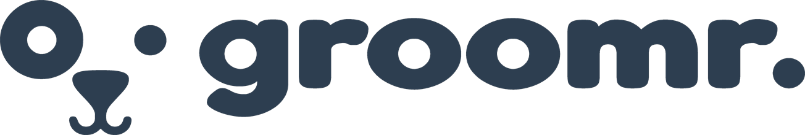

Groomr Ltd
Private & Confidential · June 2026
andrew@groomr.uk
groomr.uk
Private & Confidential
Investment Proposition
01
This document sets out the terms and context of a proposed £10,000 seed investment in Groomr, the UK dog grooming marketplace operating under Groomr Ltd. It presents the full picture — the opportunity, the mechanics, the risks, and what a range of outcomes looks like in real numbers — without glossing over the parts that are less comfortable to read.
A business plan, viability report, and competitor analysis are included in this pack for reference. Please read the full set of documents before making any decision.
02
Groomr is a two-sided marketplace connecting dog owners with independent, verified professional groomers across the UK. Dog owners use it to find a qualified groomer nearby, read verified reviews, and book appointments directly online. Groomers use it to manage their availability, accept payments, and attract new clients — without the administrative burden that currently dominates their working day.
The platform is web-first: every groomer profile is a publicly accessible, search-engine-indexed page. A dog owner can search "dog groomer near me" and land directly on a Groomr profile without downloading an app or creating an account. This is a deliberate and significant structural advantage over the competition.
Groomr charges groomers no subscription fee and charges dog owners nothing to book. Revenue is generated by a commission on each booking processed through the platform — 8% in Year 1. Groomr earns only when groomers earn.
03
Tuft is a UK-based dog grooming software platform and marketplace founded in 2021. It has raised approximately £1.75M in venture funding, processed £3.5M in gross merchandise value in 2024, and counts over 83,000 active users. These are published figures from a company operating in exactly the market Groomr is entering.
The existence of Tuft at this scale answers the most fundamental question any investor should ask: is there genuine demand for this? Demonstrably, yes. Dog owners are already booking groomers through a digital platform. Groomers are already adopting software to manage appointments. The behaviour is established and growing.
The question is not whether the market exists. The question is whether Groomr can take a meaningful share of it — and the answer lies in where Tuft's model falls short.
Tuft's weaknesses are not cosmetic. They are structural — baked into a monetisation model that extracts revenue from both sides of the marketplace simultaneously. Groomers paying £33/month resent a platform that also charges their clients at checkout. Groomr's commission-only model aligns its incentives entirely with groomer success. Tuft cannot replicate that alignment without dismantling the SaaS revenue stream that justifies its venture funding.
Tuft has done the hard work of proving the market. Groomr's task is to serve it better — with a fairer model, a more discoverable platform, and a brand that the grooming community will actually trust. Launching first in Glasgow and Edinburgh allows Groomr to build dense, high-quality local coverage before a nationally-spread competitor can mount a meaningful response.
04
This proposition seeks a £10,000 seed investment in exchange for a 5% equity stake in Groomr Ltd, the company behind Groomr. This values the company at £200,000 — a defensible position given that the platform is already built and functional, the brand is established, legal and compliance documentation is in place, and the business is at launch stage rather than concept stage.
The £10,000 will be deployed against platform operating costs and working capital during the period between launch and the point at which commission revenue becomes self-sustaining:
Platform infrastructure — hosting, database, transactional email, image storage and delivery, and payment processing. These costs scale directly with usage and booking volume.
Groomer verification — reviewing qualifications and insurance documentation for each groomer onboarded. Each verification involves manual review and carries associated admin cost.
Launch marketing — targeted outreach to groomers and dog owners in the Glasgow and Edinburgh seed markets. Year 1 acquisition is primarily founder-led direct outreach, keeping costs lean.
Working capital — general operating costs during the pre-revenue period before commission income covers running expenses consistently.
A 5% equity stake represents genuine ownership in the business — entitling the holder to 5% of any distribution of profits, 5% of any proceeds from a future share transaction or investment round, and proportional voting rights as a registered shareholder.
05
The Seed Enterprise Investment Scheme is a UK government programme providing significant tax relief to investors in qualifying early-stage companies. Groomr qualifies. The effect on a £10,000 investment is material and should be factored into any assessment of the risk profile.
What SEIS means for a £10,000 investment
HMRC permits a deduction of 50% of the investment — £5,000 — directly from the investor's income tax liability in the year the investment is made. This is not a reduction in taxable income; it is a reduction in the tax bill itself. The £5,000 is recovered from HMRC regardless of the outcome for the business.
In the event of total business failure, further loss relief can be claimed on the remaining £5,000 at the investor's marginal income tax rate. For a 45% taxpayer, this reduces the realistic worst-case loss to approximately £2,750 on a £10,000 investment.
* With additional loss relief at 45% income tax rate. The precise figure depends on the investor's personal tax position — an independent accountant should be consulted to confirm the calculation for specific circumstances.
SEIS Advance Assurance — HMRC's formal confirmation that Groomr qualifies for the scheme — has been applied for and is included with this pack where approved. The SEIS1 certificate required to claim the relief will be issued to the investor once the investment is completed and shares are formally allotted.
06
A 5% stake returns 5% of the company's value at the point a liquidity event occurs. The table below presents five scenarios across a realistic range of outcomes, from failure through to strong sustained growth. These figures are based on the business plan projections and standard marketplace valuation methodology, not guarantees.
Marketplace businesses at this stage are commonly valued at a revenue multiple — typically 0.5× to 1.5× annual recurring revenue for a profitable SaaS-enabled marketplace. The scenarios below apply the conservative end of that range.
| Scenario | Company valuation | 5% stake value | Net return |
|---|---|---|---|
| Business fails Platform does not reach sufficient traction. Capital is lost. | £0 | £0 | −£2,750 after SEIS & loss relief |
| Weak growth — 3 years Onboarding misses targets significantly. Business survives but growth is substantially below plan through Year 2. | £350,000 | £17,500 | +£7,500 net |
| Conservative — 3 years 60–70% of plan figures achieved. Platform establishes itself in 2–3 cities with steady groomer and booking growth. | £600,000 | £30,000 | +£20,000 net |
| Base case — 3 years Business plan targets met. 150 groomers by end of Year 1, 400 by Year 2, national expansion underway by Year 3. | £1,000,000 | £50,000 | +£40,000 net |
| Base case — 5 years Continued growth to 900+ groomers. Subscription tier and affiliate revenue established. Groomr is the recognised UK dog grooming marketplace. | £2,500,000 | £125,000 | +£115,000 net |
The business plan projects Year 3 revenue of approximately £1.93M from commission, subscriptions, and affiliate income. Applying a 0.5× revenue multiple — conservative by marketplace standards — produces a valuation of approximately £965,000. The £1M base case figure is derived from this. The 5-year figure of £2.5M applies the same 0.5× multiple to projected Year 5 revenue, assuming moderate growth beyond Year 3. The full revenue model is included in the business plan accompanying this document.
07
Equity investment does not carry a fixed repayment schedule. Capital is returned when one of the following events occurs. The most probable near-term route — and the one the business will actively pursue once profitable — is a direct share buyback.
If the company is profitable and both parties agree, the company may purchase the investor's stake at a mutually agreed valuation. This is one potential liquidity path, not a guaranteed or committed outcome. Any buyback would require board approval and sufficient distributable reserves at the time.
A formal fundraising round from professional investors may create an opportunity for existing shareholders to sell part or all of their stake. Alternatively, shares may be transferred to a willing third-party buyer via a secondary transaction, subject to any transfer restrictions in the shareholder agreement.
A sale of the business to a strategic acquirer, or a future listing on a public market, would constitute a liquidity event for all shareholders. Neither outcome is currently planned or actively pursued, though both remain possible as the business matures. They should not be relied upon as a primary basis for investment.
As a registered shareholder, the investor is entitled to a proportional share of any dividends declared by the company. Once the business reaches sustained profitability, this provides a recurring return without requiring any transfer or sale of shares.
The investment should be considered committed indefinitely, with no guaranteed liquidity event. The scenarios above represent possible outcomes, not promises. The investment is not a liquid asset, cannot be redeemed on demand, and carries no attached right to require the company to buy back shares at any time. Investors should only commit capital they can afford to lose entirely.
08
The following risks are material and presented without qualification. An investor who understands the full downside is in a substantially better position than one who discovers it after the fact.
The business may fail
Early-stage companies carry a high failure rate. Groomr could fail to attract sufficient groomer supply, fail to generate booking volume, face a better-funded competitive response, or exhaust runway before reaching self-sustainability. SEIS protection reduces the financial impact materially, but the loss of capital is a genuine possibility that must be accepted before investing.
The investment is illiquid
Once invested, capital is tied to the value of the business. There is no mechanism to retrieve it on demand. Early redemption cannot be guaranteed and would be subject to the company's financial position at the time of any such request.
Growth may be slower than projected
The business plan models are built on reasonable assumptions, but groomer onboarding pace and booking adoption could underperform. The weak growth scenario in the returns table reflects this — the business survives and grows, but the timeline to a return event extends accordingly.
Future investment rounds may dilute the stake
If the company raises further capital, new shares are issued and existing holders' percentages reduce proportionally. A 5% stake could become 3–4% following a future round. This typically occurs alongside an increase in valuation — the percentage is smaller but the absolute value per share is higher. Investors will be notified in advance of any round that affects existing shareholders.
Competitive response
Tuft could alter its pricing model to remove the groomer subscription fee. New entrants could emerge. This risk is mitigated by Groomr's structural SEO advantage, its commission-only alignment with groomers, and the difficulty Tuft faces in changing its monetisation without undermining the SaaS revenue stream that underpins its venture investment thesis.
09
An equity investment and a loan differ in one critical respect at the seed stage: if the business fails, an equity investor loses their investment. A lender is still owed their capital. For an early-stage company, this distinction is significant.
A loan creates a financial obligation that survives business failure. Equity removes that obligation — the downside is shared proportionally between investor and founder, and ceases at the point of failure rather than creating a personal liability. Combined with SEIS protection, which halves the effective capital at risk from the moment of investment, equity is both a more transparent and more appropriate structure for a seed investment of this nature.
10
There is no obligation to proceed and no deadline on a decision. Independent financial advice is recommended before committing. The process, if an investor decides to proceed, is as follows:
1. SEIS Advance Assurance — HMRC's formal confirmation that Groomr qualifies for the scheme. Included with this pack where approved at the time of issue.
2. Shareholder agreement — A document prepared by a solicitor confirming the terms: £10,000 for 5% equity in Groomr Ltd, the investor's rights as a shareholder, and the basis for any future share transfer. Legal costs are covered by the company. Investors are strongly encouraged to obtain independent legal advice before signing.
3. Share allotment — Shares in Groomr Ltd are formally issued and the investor's name is registered at Companies House as a shareholder of record. Shares issued are standard ordinary shares carrying full investment risk and no special redemption, buyback, or liquidity rights. This should be confirmed with your solicitor prior to completing the investment.
4. SEIS1 certificate — Issued by HMRC once shares are allotted. Used to claim the £5,000 income tax relief via self-assessment.
Following investment, quarterly written updates will be provided covering booking volumes, active groomers on the platform, revenue, costs, and any material developments affecting the company's direction or outlook.
11
This document does not constitute a legally binding contract. It is a summary of the proposed terms provided to enable an informed investment decision. A formal shareholder agreement, prepared by a solicitor, will be executed before any funds are transferred or shares issued.